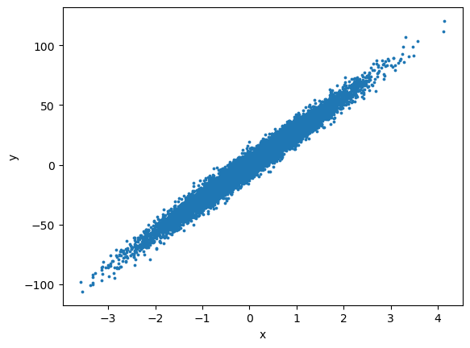

Imran now had two tools and a problem with each. Lasso zeroed columns — good — but when two columns were near-copies it kept one at random and threw the other away.
Ridge kept both and shared the credit — good — but never removed anything.
He wanted the selection of Lasso and the stability of Ridge.
ElasticNet applies both penalties together. l1_ratio slides between them: 1.0 is pure Lasso, 0.0 is pure Ridge, and 0.5 gives selection that still handles correlated columns sensibly.
🔑 The one idea
alpha sets how strong the penalty is; l1_ratio sets how much of it behaves like Lasso.
Ridge and Lasso each fix one thing. ElasticNet uses both penalties at the same time.
LinearRegression : error only
Ridge (L2) : error + alpha x slope^2 slope shrinks, never reaches 0
Lasso (L1) : error + alpha x |slope| slope can land exactly on 0
ElasticNet : error + both penalties shrinks like Ridge, can still reach 0 like Lasso
The formula sklearn actually minimises
cost = (1 / 2n) x sum( y - y_pred )^2 + alpha x r x |w| + (alpha x (1 - r) / 2) x w^2
\__________ __________/ \______ ______/ \__________ __________/
\/ \/ \/
how wrong the line is Lasso price Ridge price
n = number of training rows
w = the slope (coef_)
alpha = total price of the slope default 1.0
r = l1_ratio, how that price is split default 0.5
So there are two knobs, not one:
knob
question it answers
alpha
how much do I punish a big slope?
l1_ratio
how much of that punishment is Lasso, how much is Ridge?
l1_ratio = 0.0 -> pure Ridge
l1_ratio = 0.5 -> half and half (the default, used everywhere in this notebook)
l1_ratio = 1.0 -> pure Lasso
The data below is one input column, one output number, 10,000 rows, noise = 5.
x runs from about -3.58 to 4.13, y from about -106 to 121.
codecell 1
from sklearn.datasets import make_regression
x,y = make_regression(n_features=1, noise=5, n_samples=10000,random_state=2)
import matplotlib.pyplot as plt
plt.scatter(x,y,s=3)
plt.xlabel('x')
plt.ylabel('y')
plt.show()

Output from this notebook.
1. Train-Test Split
8,000 rows to learn from, 2,000 rows kept hidden for the score.
Two numbers from the training rows are used again and again below:
n = training rows = 8000
S = how spread out x is on those rows = sum of (x - average x)^2 = 8033.32
n / S = 0.9959
random_state=0 fixes the split, so every number in this notebook is repeatable.
codecell 3
from sklearn.model_selection import train_test_split
X_train, X_test, y_train, y_test = train_test_split(x, y, test_size = 0.2, random_state=0)
Same three steps as always: fit, predict, score. The model it produces is two numbers:
value
meaning
coef_
18.558122
y moves 18.56 when x moves 1
intercept_
-0.147721
the height of the line at x = 0
R² on the 2,000 hidden rows is 0.851062.
Plain LinearRegression on the same rows gives slope 28.296622 and R² 0.969932.
So the default alpha = 1 took about 9.74 off the slope. That is a big cut for a setting
nobody chose.
One formula for the whole notebook
ElasticNet does the Lasso step and the Ridge step together: subtract on the top, divide on
the bottom.
Lasso part: subtract
_____________/\______________
/ \
new slope = ( old slope - alpha x r x n/S ) / ( 1 + alpha x (1 - r) x n/S )
\____________ _____________/
\/
Ridge part: divide
the top is floored at 0 - it never goes negative
With r = 0.5 and n/S = 0.9959, both alpha terms become 0.4979 x alpha:
new slope = (28.2966 - 0.4979 x alpha) / (1 + 0.4979 x alpha)
alpha = 1 -> (28.2966 - 0.4979) / 1.4979 = 18.5581
That is exactly what coef_ prints. Every cell after this one is the same line with a
different alpha.
codecell 5
from sklearn.linear_model import ElasticNet
reg = ElasticNet()
reg.fit(X_train,y_train)
reg.predict(x) runs on all 10,000 rows, so the orange points form the fitted line across
the whole cloud.
blue cloud = the real data, it never changes
orange line = the model, it gets flatter every time alpha goes up
At alpha = 1 the line already leans less than the cloud. The cloud climbs faster than the
line, and that visible gap is the regularization — it is why R² dropped from 0.9699 to
0.8511.
The next cells are the same code with a bigger alpha. The formula predicts each one before
sklearn runs:
alpha
top: 28.2966 - 0.4979 x alpha
bottom: 1 + 0.4979 x alpha
coef_ printed
test R²
2
27.3007
1.9959
13.678753
0.706671
5
25.8072
3.4896
7.395336
0.437311
20
18.3381
10.9585
1.673410
0.110319
100
-21.4934 → 0
—
0.000000
-0.000030
The drop is fast at first and then slows down. The top is shrinking while the bottom is
growing, so the slope falls hard early and then crawls toward 0.
Where the slope hits exactly 0
The top goes negative once alpha is big enough, and ElasticNet stops it at 0:
the alpha that kills the slope = old slope x S / (n x r)
= 28.2966 x 8033.32 / (8000 x 0.5)
= 56.83
alpha = 100 in the last cell is well past that line. coef_ is [0.], the line is flat,
and intercept_ settles on the average of y_train (-0.474607). The model now predicts
the same number for every row, so R² is about 0 — which is what R² = 0 means: no better
than guessing the average.
Pure Lasso would have killed the same slope at 28.41. ElasticNet needs roughly twice the
alpha because only half of it (l1_ratio = 0.5) is the L1 part that can reach 0.
A small alpha is a small price, so the slope stays close to where linear regression put it.
alpha
coef_
test R²
distance from OLS slope
0.2
25.643339
0.959904
2.653 below
0.1
26.907057
0.966768
1.390 below
0.01
28.151469
0.969816
0.145 below
0 (OLS)
28.296622
0.969932
—
The score barely moves here, and it never beats plain LinearRegression. That is expected:
one clean column and 10,000 rows means there is no overfitting to remove. Regularization only
pays when the model has more freedom than the data can support.
Do not pass alpha=0 to ElasticNet. It works, but sklearn warns about it — use
LinearRegression for that case.
cost = error + alpha x r x |w| + (alpha x (1 - r) / 2) x w^2
new slope = (old slope - alpha x r x n/S) / (1 + alpha x (1 - r) x n/S) top floored at 0
alpha >= old slope x S / (n x r) -> slope = 0, the column is dropped
Ridge divides, Lasso subtracts, ElasticNet does both. That is the whole idea.
Common mistakes
Mistake
What actually happens
Copying an alpha from another project
alpha only means something next to n / S, and both change with your data.
Tuning alpha and leaving l1_ratio at 0.5
It is a real second knob. At alpha = 1: l1_ratio=0.25 → slope 16.06 (R² 0.7841), 0.5 → 18.56 (R² 0.8511), 0.75 → 22.06 (R² 0.9198). More Ridge share means more dividing, which cuts harder here than subtracting.
Reading Ridge(alpha=1) and ElasticNet(alpha=1, l1_ratio=0) as the same model
ElasticNet divides the error by 2n first, Ridge does not. On this data ElasticNet(alpha=1, l1_ratio=0) matches Ridge(alpha=8000) — slope 14.18, not 28.29.
Not scaling the features
Both penalties are charged on raw coefficient size, so a column in small units gets punished more. Fit inside a Pipeline with StandardScaler.
Expecting ElasticNet to beat OLS here
It only helps when the model is overfitting. One clean column, 10,000 rows — nothing to fix, so every increase of alpha only costs score.
Note
If you remember only one thing...
ElasticNet is Ridge's divide and Lasso's subtract in one formula. alpha sets the total
price of the slope, l1_ratio splits that price, and only the Lasso half can push a
coefficient to exactly 0.
✍️ Handwritten notes
The pages written by hand while working through this topic — the version that came before the tidy write-up. Click any page to enlarge.